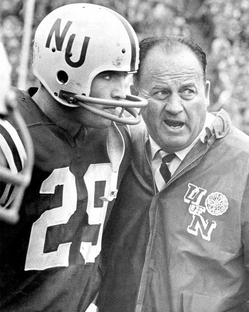
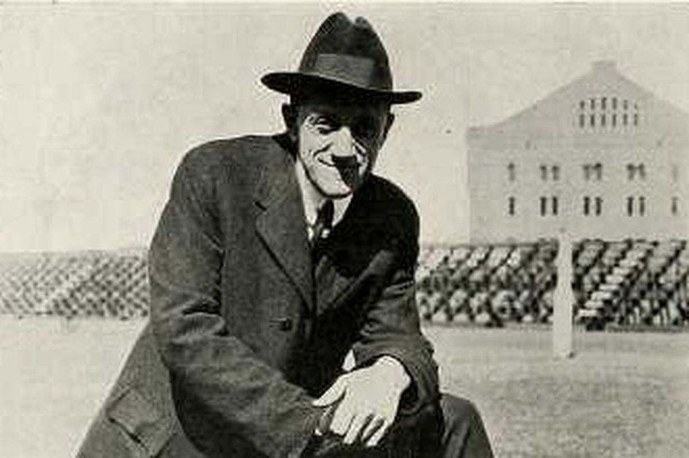
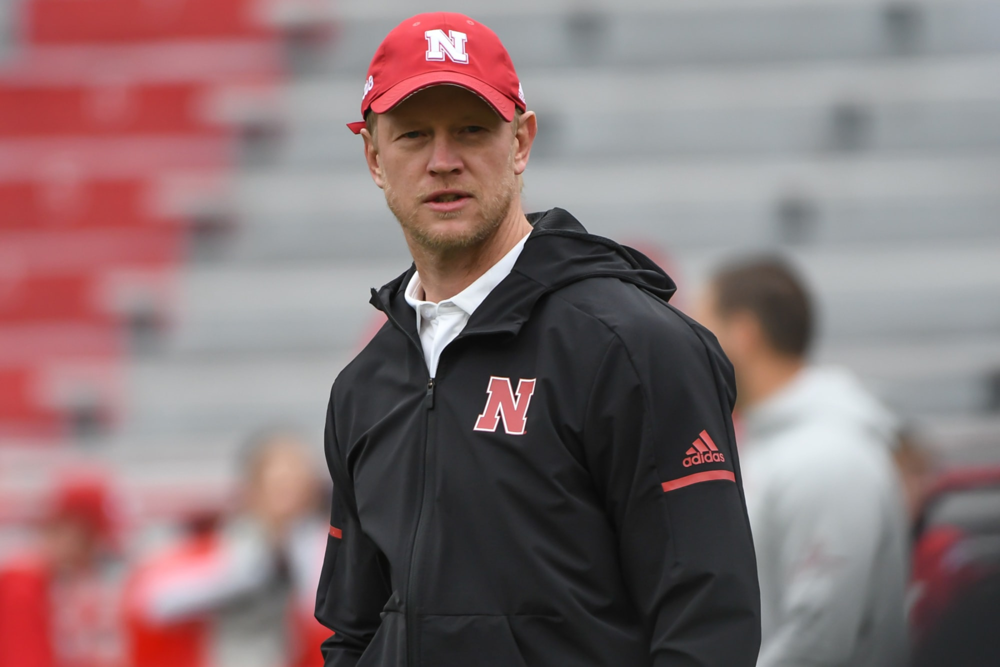

Tom was the Head Coach at Nebraksa from 1973-1997. He managed to rack up an impressive record of 255-49-3. Early on he faced various critics for his inability to win big games. He never won less than 9 games a season throughout his 25 years at Nebraska. He won National Championships in 1994, 1995, and 1997. He is still very beloved in the State of Nebraka and still has a say in what goes on with Nebraska football today.
Image from www.elmhurst.edu

2. Bob Devaney
Many argue that Bob deserves to be #1 on the list. He was the Head Coach from 1962-1972 and had an overall record of 101-20-2. He was responsible for turning around a program that was very close to falling off the tracks. He brought Nebraska back to a superpower national status, while also mentoring Osborne. He won back to back National CHampionships in 1970 and 1971. To close out his career he was able to make it to three straight Orange Bowls.
Image from www.journalstar.com

3. Ewald O. "Jumbo" Stiehm
He was the coach from 1911-1915. He had a record of 35-2-3 and didnt show any signs of slowing down his dynasty. He never lost a game in the Missouri Valley Conference. At one point, he had a 34 game win streak that stretched more than one season. He also managed to win a conference title as a Mens Basketball Coach as well. He left tp head to Indiana after the school turned down playing in the rose bowl and ould not give him a $750 raise.
Image from www.cornnation.com

Current Coach: Scott Frost
Scott played at Nebraska and was the starting quarterback for the 1997 National Championship team. He coached at UCF before coming home and taking over as the Head Coach at Nebraska. He has struggled, but everyone seems to think the future is bright. However, he has had four consecutive losing seasons. In one-possession games, he is 5-20. The Huskers have an 0-14 record with Frost versus ranked opponents. He may be turning things around slowly, but he doesn't have much time left.